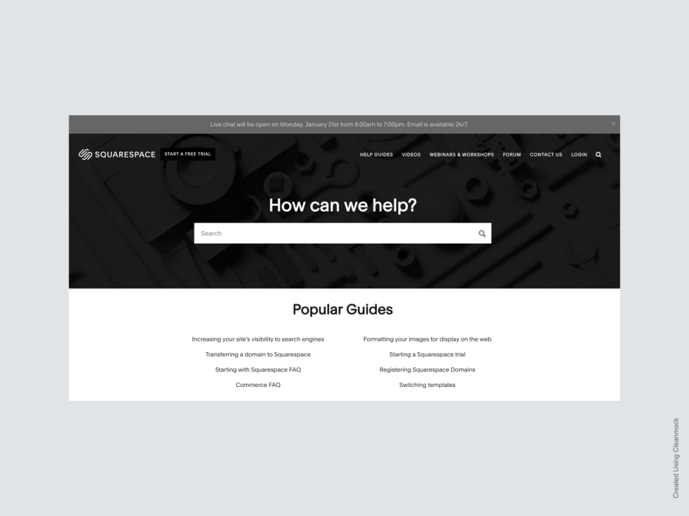
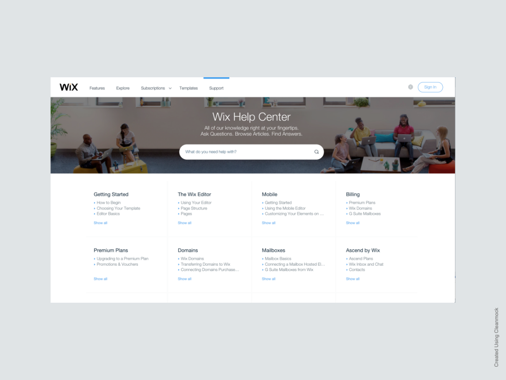
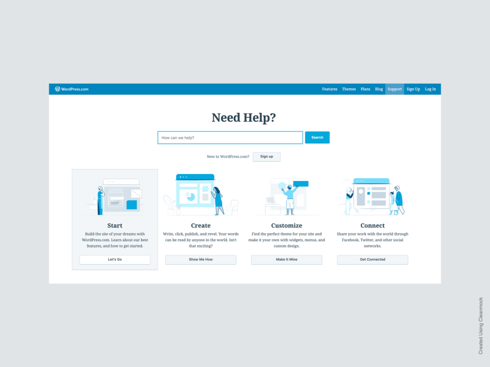
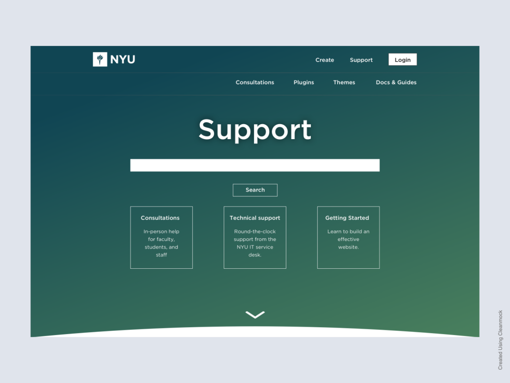
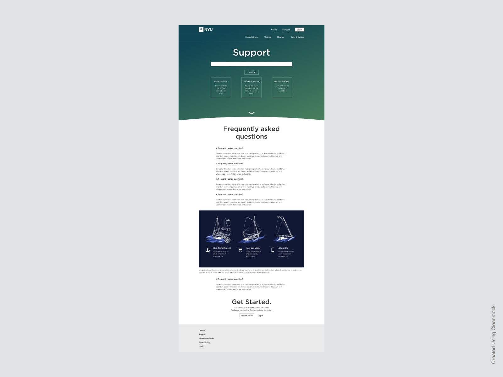
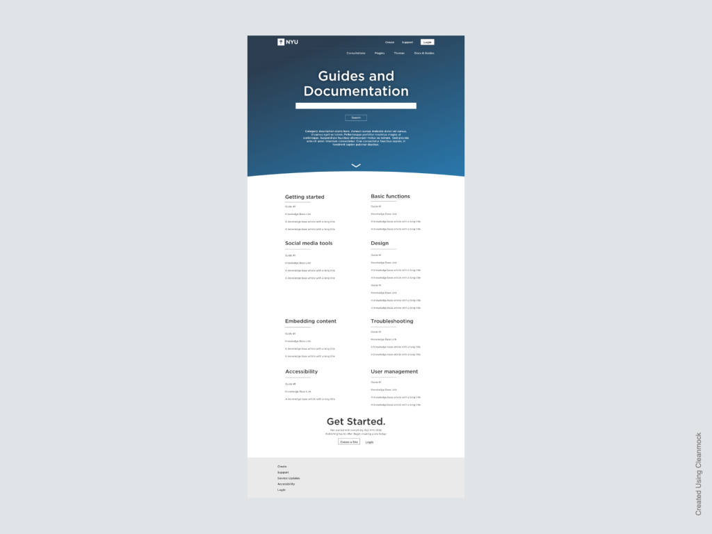
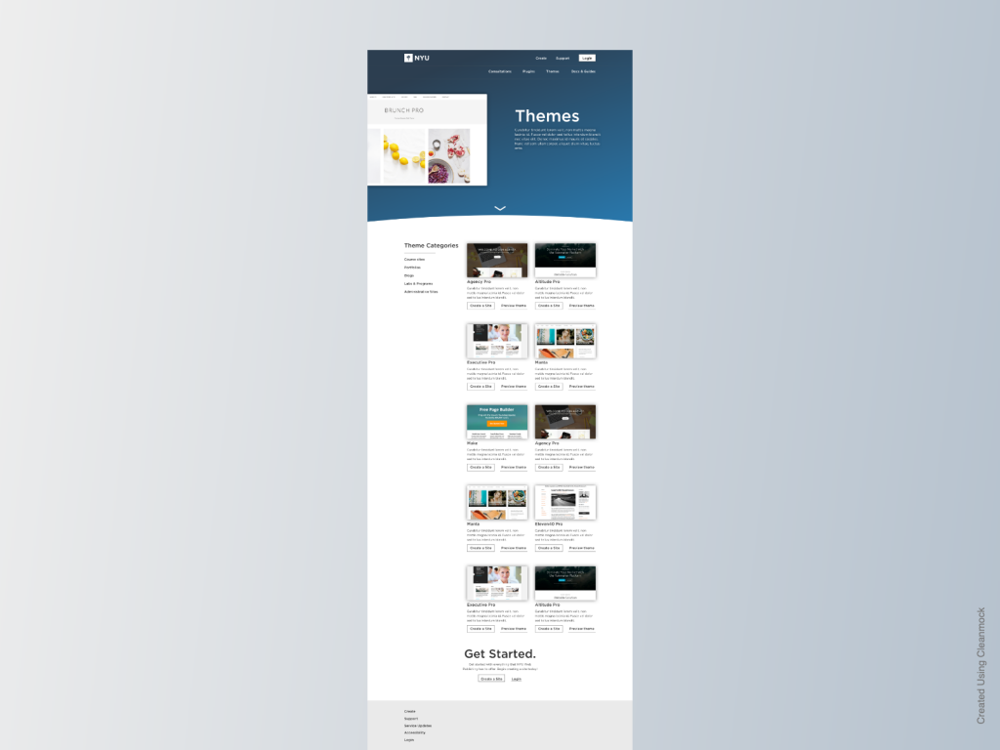

Problem
The user interviews we conducted as part of the NYU Web Publishing home page redesign highlighted product support as a pain point. Even our most experienced clients are unable to find the information they need.
NYU IT policy mandates that all support documentation for NYU supported products is maintained solely in this location. Support teams create documentation and it is approved at several different levels before being published to the Knowledge Base.
Unanimously, our interviewees wished to avoid official NYU support channels. Several mentioned how difficult it was to find or access the information they needed, and others mentioned the questionable accuracy of what they found.
Furthermore, many would resort to Google. For many products, that would be an acceptable answer and may surface the information they need. However, our WordPress product is locked down quite tightly, so solutions found through web searches are sometimes misleading when it comes to our product.
A final, interesting, finding was that everyone expected to find an FAQ on our support pages. The type of content the FAQ would contain was unclear, but it was almost always expected.
Approach
For this project, I assumed the following:
- Solution must direct users to official support channels.
- Solution must be easily accessible through the home page of the site.
- Solution should follow patterns for support resources in consumer web applications, not enterprise software.
- The design should encourage users to make use of existing resources, rather than web search.
Some of the above were mandated by the organization, but most are based on the responses we received in conducting interviews.
I started by researching how competing products build support landing pages. I spent most of my time focused on these three:

Squarespace 
Wix 
WordPress.com
Each of the sites share some elements:
- Prominent search bar
- Large category links
- Links to popular or frequently requested support materials
I attempted to include some of the best practices which seem to be suggested by our competitors’ work, while also taking into account the realities of the organization and information gathered from our users.
Design
The proposed design adapts these elements for the NYU context.

While most of the competing designs have prioritized search, the logic behind including it at the top is that there are a variety of places on the site where relevant information might be found. Keeping search at the top increases the likelihood that users will find what they are looking for, even if it is mentioned in our service updates and communication, rather than the documentation.
We’re also trying at this point to point our users in three different directions for support.
- Consultations for students, faculty, and staff who would prefer in person help with the product.
- Technical support, which will funnel users into the university-wide (and much maligned) ticketing system.
- Getting Started, which will lead users to the documentation and how-to guides that take a more general approach to website creation and have been allowed to exist outside of the official Knowledge Base.
The purpose of these three buttons aren’t set in stone. Future research would help us decide if there is something more useful to our users (such as a link to the Docs & Guides page) to place in at the top of the page.

Participants in our initial research frequently said that they expected a FAQ page when they clicked support, but the contents will need to be researched further. Ideally, it could be based on analysis of support tickets.

NYU policy requires that we keep product documentation in the NYU Knowledge Base. Our research has shown that many customers would prefer to avoid the Knowledge Base as much as possible. In an attempt to thread the needle between our user needs and organizational needs, the support site will include a directory to help users navigate our documentation, although all the article content will be stored in the Knowledge Base.

Many of the features our users expect and rely on come as themes and plugins. One of the major findings from our initial research was that themes were important to users, but it was difficult to understand which theme they should select. The themes page attempts to help providing a visual list of all themes, several categories of theme, and a short description of the theme. A link to a sample site built with each theme will also be available.
Next steps
While the majority of the visual design work has been completed, this only represents the first iteration. Further design will take place as resources become available for research and development of future iterations of our home page and product portal.